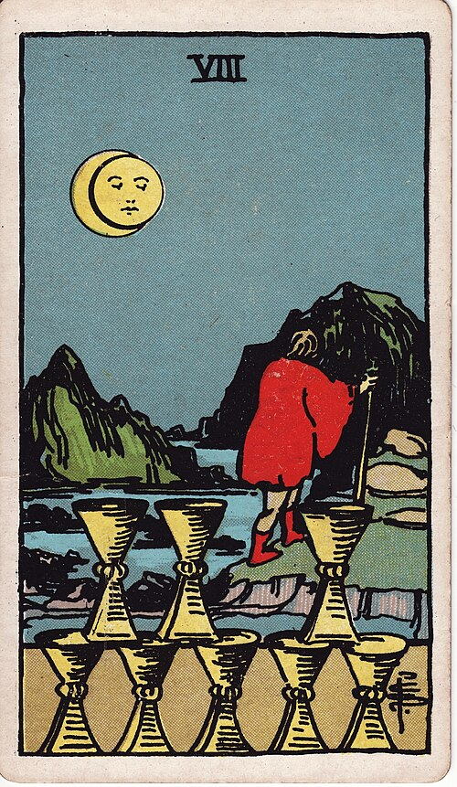

| Arcana | Minor |
| Suit | Cups |
| Element | Water |
| Attribution | Saturn in Pisces |
Eight of Cups
In shortWalking away from something that is fine but not enough.
Upright
You leave something that was not bad, and that is exactly what makes it hard. Nothing here is broken — it is simply not enough, and going means disappointing people whose questions you cannot fully answer. The card supports the leaving. What you are looking for is not here.
Reversed
The departure stalls. You stay past the point of usefulness, go back to something you already left, or leave without knowing what you are looking for and then keep leaving. It can also mean a decision to stay and repair, which is fine if you actually chose it.
The turn
Go, even without the full explanation. "Not enough" is a sufficient reason.
Reading with your own deck?
Sage records the cards you actually pull, writes the reading, keeps every one, and shows you what keeps returning across them. Free, private, no account.